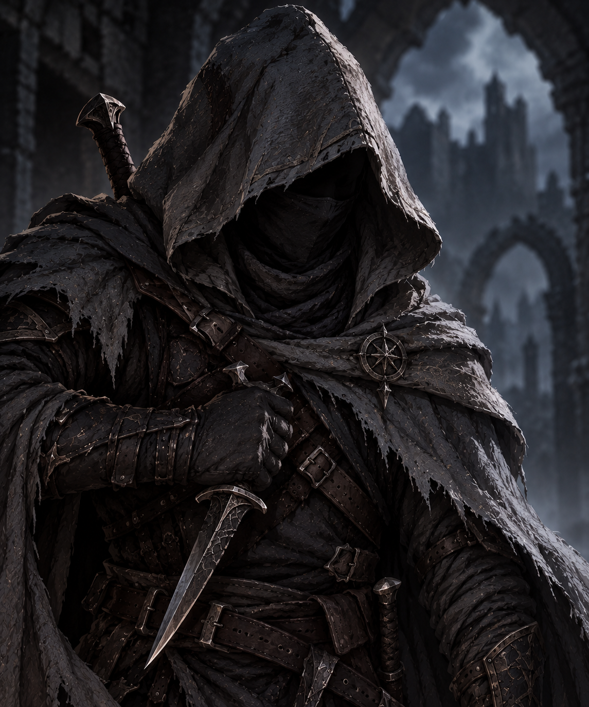

Adepto das Sombras

D - Evasão: O Adepto consegue distorcer sua imagem e se transformar em um borrão, conseguindo evadir-se de um Combate ou Evento, recuando uma casa sem ativar o efeito da mesma. Evasão também pode ser usada em combate para desviar de 1 habilidade. Não pode ser usada em Lordes, Eventos e Guardiões.
D - Esquiva Perfeita: A velocidade de Adepto aumenta em 5x, Os próximos 2 ataques sem ser de Habilidades feitos contra Adepto no combate atual serão esquivados automaticamente.
O - Furto Espectral: O Adepto canaliza o Hogi na sua arma e corta uma pequena fenda no espaço e tempo, esse espaço simula os equipamentos do alvo ou sua alma, possibilitando que o Adepto roube uma carta do mesmo (o Alvo perde a carta); caso a carta escolhida for de habilidade o adepto poderá usar a mesma na próxima ação ou até o fim do combate atual. Caso O Furto seja usado em um monstro do cenário, o ladino poderá receber o consumível daquele monstro e recuperar uma habilidade que já tenha sido usada anteriormente. Furto Espectral causa 1 de dano ao PV do alvo roubado.